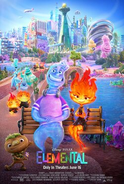
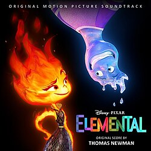
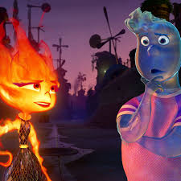

| İnsideOut | ÖlüGelin | Elemental | Zootopia | Arabalar |
|

Elemental, Walt Disney Pictures için Pixar Animation Studios tarafından üretilen2023 Amerikan animasyon romantik komedi-drama filmidir . Peter Sohn tarafından yönetilen ve Denise Ream tarafından üretilen filmin senaryosu Sohn, John Hoberg, Kat Likkel ve Brenda Hsuehtarafından yazılmıştır. Filmde Leah Lewis , Mamoudou Athie , Ronnie del Carmen , Shila Ommi, Wendi McLendon-Covey ve Catherine O'Hara'nın sesleri yer almaktadır. Doğanın antropomorfik unsurlarının yaşadığı bir dünyada geçenhikaye,Ember'ın babası Bernie'ye ait bir marketi kurtarmaya çalışırken şehirde birlikte vakit geçiren ateş elementi Ember Lumen ile su elementi Wade Ripple'ı takip ediyor. Elemental'ın gelişimi, Sohn'un ateş ve suyun bir araya gelip gelemeyeceği fikrine dayanarak Pixar'a konsepti sunması ile başladı . Film, Sohn'un 1970'lerde New York'ta göçmen bir ailenin oğlu olarak büyümesinden ilham alarak şehrin kendine özgü kültürel ve etnik çeşitliliğini vurgularken, hikâyesi Guess Who's Coming to Dinner (1967), Moonstruck (1987) ve Amélie gibi romantik filmlerden esinlenmiştir. Yapım ekibi, ilham almak için Venedik ve Amsterdam gibi YouTube'da bakış açısıyla çekilmiş şehir turlarını saatlerce izleyerek araştırma yaptı . Her karakterin, özellikle de ana karakterlerinin görsel efektlerini ve görünümünü tasarlamak için animasyon araçları kullanıldı. Elemental'ın prodüksiyonu, hem stüdyoda hem de yapımcıların evlerinde, tahmini 200 milyon dolarlık bir bütçeyle yedi yıl sürdü. Müzikleri Thomas Newman besteledi ve Lauv " Steal the Show " şarkısını yazıp seslendirdi. Film, 2022 yılında hayatını kaybeden Pixar animatörleri Ralph Eggleston , Thomas Gonzales, Amber Martorelli ve J. Garrett Sheldrew'a ithaf edilmiştir. Elemental, 27 Mayıs 2023'te 76. Cannes Film Festivali'nde kapanış filmi olarak yarışma dışı gösterime girdi ve 16 Haziran'da Amerika Birleşik Devletleri'nde RealD 3D , 4DX ve Dolby Cinema formatlarında gösterime girdi. Başlangıçta beklenenin altında bir gişe hasılatı elde etmesine rağmen, film analistler tarafından beklenmedik bir başarı olarak değerlendirildi ve dünya çapında 496,4 milyon dolar hasılat elde etti. En İyi Animasyon Film dalında Akademi Ödülü ve En İyi Animasyon Film dalında Altın Küre Ödülü de dahil olmak üzere birçok ödüle aday gösterildi .  |